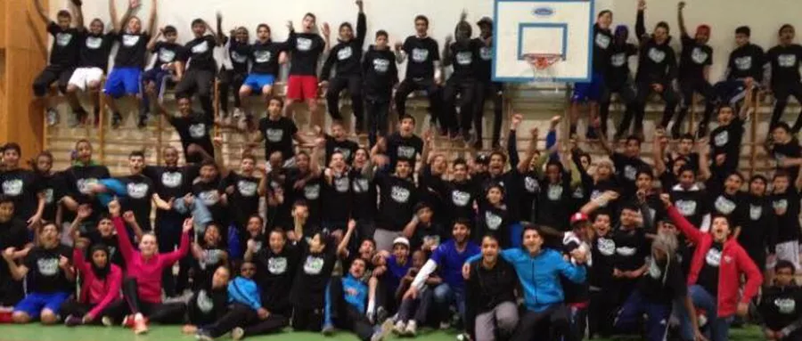
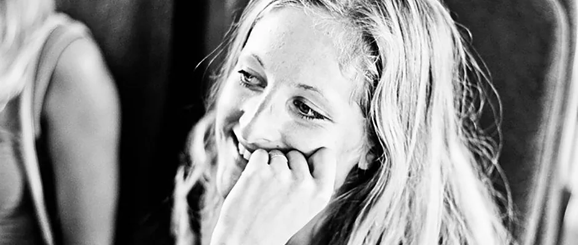
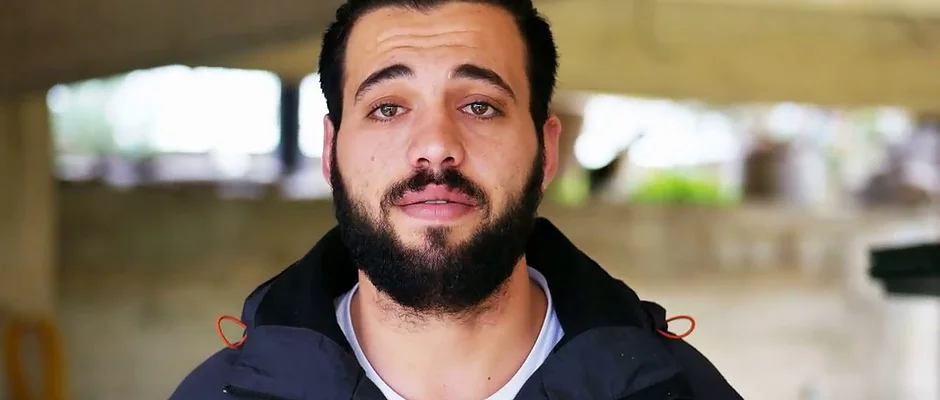

THE UN STUDENT ASSOCIATION OSLO


THE UN STUDENT ASSOCIATION OSLO
For the first time in history, the UN-Student Association Oslo is organising a one-of-a-kind festival - known as UN-Theme Week 2018: Still Human. With more than 21 collaborators and approximately 60 volunteers working actively towards making the festival a reality, the week certainly promises knowledge exchange and enticing dialogue.
The UN-Student Association Oslo are honoured to be working alongside UNICEF, UNICEF Norway, The Oslo Center, Nobel Peace Center, Trigger, FOLK!, Red Cross, MSF, Refugee Aid, IUG, Amnesty International, SOS Children's Villages, Save the Children, Norad, FOKUS, YATA Norway, Ministry of Foreign Affairs, Norwegian People's Aid, IOM, UiO, Oslo Metropolitan University. More so, we are proud to announce our close collaboration with Young Sustainable Impact (YSI), FOLK!, Future Leadership Development and Emergence (Project and Process Management Education + DesignStudio) in organising workshops during the week. Our primary goal with organising workshops is to pave the way for young leadership and show how youth can work closely with the UN Sustainable Development Goals.
A common denominator throughout the week will be our theme, namely "Still Human" - though we will discuss more specific topics that are at the forefront of our global society today. Expand your horizons and take part in an innovative week aimed at challenging the way you think and understand the world around you.
CRIMEFIGHT FOOTBALL
HANNA BAUGE
REFUGEE 4 REFUGEES - OMAR ALSHAKAL
WID AL-SAEDY
On the occasion of Karriereuka at UiO, the UN Student Association Oslo invite you all to a panel conversation about innovation in the humanitarian sector. We will also have a visit from the United Nations Association, holding a brief presentation on where we stand on the Sustainable Development Goals, before we finish the event off with some information about internship-opportunities.
Innovation in the humanitarian sector is more relevant now than ever. The world is facing some of the biggest challenges in our time. This opens the doors for entrepreneurial wave and the digital development.
As the world is faced with some of our time’s greatest humanitarian challenges, the humanitarian sector is in desperate need of innovation and entrepreneurship. How can we incorporate innovation into the humanitarian sector, ensuring those who need it get sufficient aid? What are the greatest challenges? How successful has this coalition been so far?
Retten til mat er en universell menneskerett. Men en av de største utfordringene verden står overfor, er å skaffe mat nok til alle. I september kom FN ut med en rapport som viser at klimaendringene er en av hovedårsakene til at det blir mer sult og større matvarekrise i verden. Ett av ni mennesker på jorden sulter, i følge rapporten. Hvordan skjer dette og hvordan kan vi møte denne enorme utfordringen?
FN - studentene er stolte av å invitere til foredrag og diskusjon om dette spennende og svært aktuelle temaet. Seniorforsker i CICERO (senter for internasjonal klimaforskning) Hans Asbjørn Aanheim kommer til oss for å presentere rapporten og snakke mer om klimapanelets rolle og vurderinger av matvaresikkerhet. Deretter overlater vi ordet til direktør for barns rettigheter og bærekraft i UNICEF, Kim Noguera Gabrielli, som skal snakke videre om sult-utfordringene i verden og hvordan de konkret jobbes med.
Since October of 2016, the Colombian government after 50 years of conflict, singed the peace accords with the guerrillas known as FARC. Thanks to the support of several international organisations such as the Norwegian Refugee Council (NRC) or The United Nation's mission verification in Colombia, most of the implementation process has been done with great success. The peace accords, give to women a very important role, prioritising their rights and protection as victims or reincorporated people.
The implementation process has been a great advance for the Sustainable Development Goal No. 16, “Promote peaceful and inclusive societies for sustainable development, provide access to justice for all and build effective, accountable and inclusive institutions at all levels”. Nevertheless, it is a crucial moment to conflict's complete end, Considering the challenges that Colombian Government is facing through this very important face.